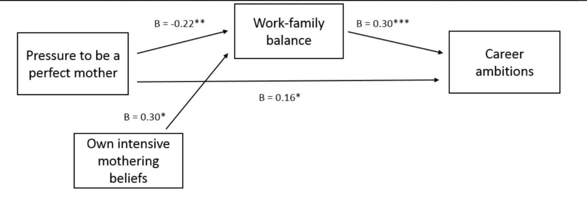

Je détestais la maternelle. J'étais l'une des plus jeunes et des plus petites, et les meilleurs jouets étaient avec les plus grands. Alors, mon père me déposait souvent chez ma grand-mère en allant travailler. J'adorais le temps que je passais chez ma grand-mère. Aux États-Unis, plus de 80 % des grands-parents déclarent assurer ce type de garde.
C'était il y a des décennies, mais la tendance n'a fait que s'accentuer : « les responsabilités de garde à long terme passant de 39,3 % en 2012 à 49,3 % en 2021 » (Grandfamilies Report 2021).
Ma mère travaillait à temps partiel, et mes grands-mères ont aidé à nous élever. Elles restaient dormir, partageaient le foyer, prenaient en charge des tâches — comblant discrètement les vides qui faisaient tourner la vie de famille. Aujourd'hui, des années plus tard, la participation des femmes au monde du travail n'a fait qu'augmenter, et alors que je prévois un avenir avec des enfants, je prévois activement d'y associer mes parents. C'est la tendance mondiale : nous avons besoin des femmes dans le monde du travail, et pour que cela soit possible, les familles ont besoin que les grands-parents aident à s'occuper des enfants.
C'est ce que permet FamilyCompass.
FamilyCompass offre un partage de tâches simple avec des affectations selon l'âge, des calendriers, fichiers et localisations partagés, et tout le reste relatif à la garde des enfants. Aucune autre application sur le marché ne traite autant de tâches autour de la garde des enfants à la fois tout en se concentrant sur toutes les personnes impliquées, pas seulement l'enfant. Mon FamilyCompass propose un tableau de bord par enfant, qui liste ses loisirs individuels, ses listes de souhaits, ses tâches et ses besoins de bien-être. Mais ensuite, tout cela pour les adultes aussi. Ils ont, eux aussi, des listes de souhaits, des tâches et des besoins de bien-être, et ils comptent tout autant.
Quand j'étais petite et que mon père me couchait et me racontait des histoires du soir, il venait de rentrer du travail le soir et terminait sa journée en travaillant depuis son bureau à domicile après ces histoires. Et aujourd'hui, des années plus tard, c'est souvent la norme pour les deux parents. Cela s'avère être un défi fondamental : construire une carrière et être un parent parfait en même temps. Cela paraît presque impossible, surtout avec toutes ces pressions sociales. « Nous constatons que les femmes éprouvent un moindre équilibre vie professionnelle-vie familiale à mesure qu'elles ressentent la pression d'être une mère parfaite, et que cet équilibre moins bien vécu est lié à de moindres ambitions de carrière. » (Frontiers in Psychology, 2018)

La relation entre la pression d'être une mère parfaite, l'équilibre vie professionnelle-vie familiale et les ambitions de carrière
Pour cette raison, FamilyCompass ne s'intéresse pas seulement au bien-être de l'enfant, mais aussi à celui des pères et des mères, avec des mécanismes de soutien intégrés. FamilyCompass dispose de détecteurs automatiques de conflits de calendrier et synchronise plusieurs calendriers pour aider les parents à la fois à aller à cette réunion et à aller chercher les enfants à l'école, et à automatiser ce conflit afin de ne pas subir le stress quand il est trop tard.
Une grande partie du stress des femmes vient de la perception selon laquelle : « Les possibilités des hommes d'investir dans les tâches domestiques sont limitées » (Journal of Marriage and Family, 2005). Pour cette raison, FamilyCompass dispose d'un tableau de bord clair qui se concentre, en toute transparence, sur ce que les parents peuvent faire pour les enfants et rend visible quand il n'y a pas pleine égalité entre les parents — maman a pris en charge 8 tâches ménagères et de garde cette semaine et papa 3. Quand il existe une liste claire de tâches partagées avec de bons rappels, cela réduit le « contrôle » et permet aux pères d'être plus confiants pour jouer un rôle actif dans la parentalité et de régler les choses ensemble. Quand des grands-parents ou d'autres membres de la famille sont aussi impliqués, cette charge se partage plus largement encore et il y a moins de pression sur l'individu. Il n'est pas non plus nécessaire de « demander de l'aide », car les tâches sont visibles et chacun dans le compte familial peut les voir et y inscrire son nom.
Les mères passent souvent plus de 30 heures par semaine à la garde des enfants et aux soins du foyer. FamilyCompass répartit ce temps, en toute transparence, en tâches claires qui peuvent être partagées et mieux gérées. Les tâches administratives sont souvent déjà réparties dans la famille, mais FamilyCompass allège encore cette charge administrative. Grâce aux excellents standards de chiffrement de FamilyCompass, il est sûr, pour toute personne qui reçoit le courrier administratif à la maison ou par e-mail, de le téléverser en photo dans une tâche identifiée tôt et donc gérée avec moins de stress et moins de communication inutile. Une tâche est listée, reçue et faite. Aucune discussion sur l'administratif nécessaire.
Renforcer les liens familiaux grâce à une coordination intelligente
Tâches ménagères, administratif, loisirs, carrières, garde des enfants — il se passe beaucoup de choses pour les familles. Enfant, et peut-être plus encore aujourd'hui, je détestais le stress autour de tout cela, mais le résultat est magnifique. Un dîner de famille partagé, avoir sa famille présente lors de mes spectacles de musique, fêter les fêtes ensemble, simplement un bon moment ensemble.
C'est pour cela que FamilyCompass existe. Il minimise l'administratif, coordonne et partage le nécessaire et alloue et compte automatiquement l'Heure d'Or, le temps de qualité que nous passons avec nos familles.
Inscrivez-vous au test bêta de FamilyCompass et laissez votre famille être votre Étoile du Nord.
Alina
0 commentaire